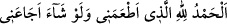
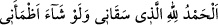
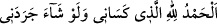
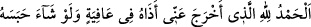

şükreden bir kuldu.
Ey “Nuh ile birlikte” gemide “taşıdığımız kimselerin nesli!” Bu âyetten maksad,
atalarını Nuh (a.s.)’ın gemisinde boğulmaktan kurtararak onlara olan nimet ve ihsânını
hatırlatarak tevhîde kuvvetle sevk etmek içindir.
el-Kevâşî’de der ki: Bu, tüm insanlara bir iyiliktir. Çünkü bütün insanlar, gemide
boğulmaktan kurtarılan kimselerin nesilleridir. Dolayısıyla âyetin mânâsı şudur: Onlar
mü’minlerdi. Siz de onlar gibi olun. Atalarınızın izlerine uyun.
Kâşifî de şöyle der: Âyette bahsedilen Sâm’dır. İsrâiloğulları’nın atası olan İbrâhim
(a.s.) onun neslindendi. Yâni atanızı tufandan kurtarma nimetimi hatırlayın ve şükredin.
“Doğrusu o,” Nuh (a.s.) her durumda Allah’a “çok şükreden bir kuldu.”
Bir şey yediğinde:
“Beni doyuran Allah’a hamd olsun. Dileseydi beni aç bırakırdı.” derdi.
Bir şey içtiğinde:
“Beni içiren Allah’a hamdolsun. Dileseydi beni susuz bırakırdı.” derdi.
Bir şey giydiğinde:
“Beni giydiren Allah’a hamdolsun. Dileseydi beni çıplak bırakırdı” derdi.
Büyük abdestten sonra:
“Afiyet vererek benden ezayı çıkaran Allah’a hamdolsun. Dileseydi bunu hapsedip
tutardı.” derdi.
Rivâyet edilmiştir ki Nuh (a.s.), iftar etmek istediğinde yemeğini îman eden kimselere
arz ederdi. Muhtaç birini bulursa onu kendisine tercih ederdi.
Bu âyette Nuh (a.s.)’ın beraberindekilerin onun şükrünün bereketiyle kurtarıldığı
bildirilmekte, zürriyetini de ona uymaya teşvik etmekte ve onları küfür mertebelerinin
en büyüğü olan şirkten sakındırmaktadır.
et-Te’vîlâtü’n-Necmiyye’de der ki: “Doğrusu o, çok şükreden bir kuldu.” Yâni Nuh
(a.s.) çok şükreden bir kuldu; genişlik ve rahatlığı bizden bir nimet olarak gördüğü gibi
başına gelen sıkıntıları da bir nimet olarak görürdü. Böylece her iki halde de
şükrederdi. Şükründeki bu çokluğundan dolayı “Şekûr” (çok şükreden) diye
isimlendirildi. Allah Teâlâ da onun ziyadesiyle şükründen dolayı nîmetini ona artırdıkça